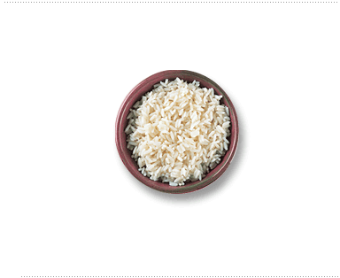

jQuery utilizes an event system whereby an event object is guaranteed to be passed to any event handler.
The event object also contains guaranteed properties depending on the event.
The jQuery.data() method allows you to attach data of any type to DOM elements. The data() method is safe from circular references and thus free from memory leaks. jQuery ensures that the data is removed when DOM elements are removed via jQuery methods, and when the user leaves the page. You can store arbitrary data associated with a specified element and return the value that was set.